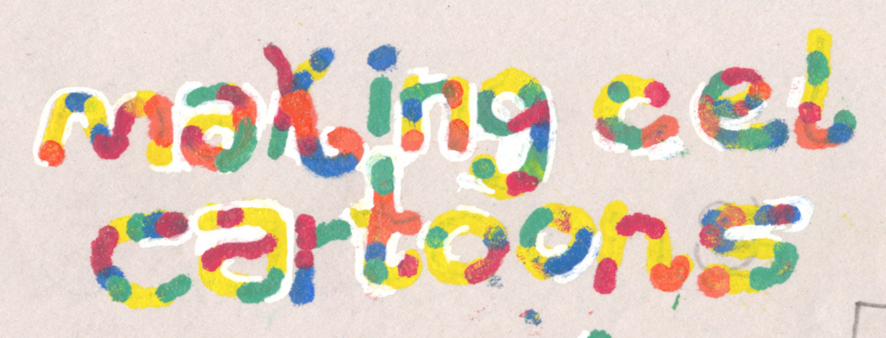

Making Cel Cartoons (feat. Josh Cloud)
The official I made this cel animation guide in 2019 for my friend Josh Cloud. My undergrad thesis film, 2012, was made by a team of painters painting individual images onto cels. This guide is a way for me to forward what i learned on to others who may wish to try it out. I hope you enjoy!
